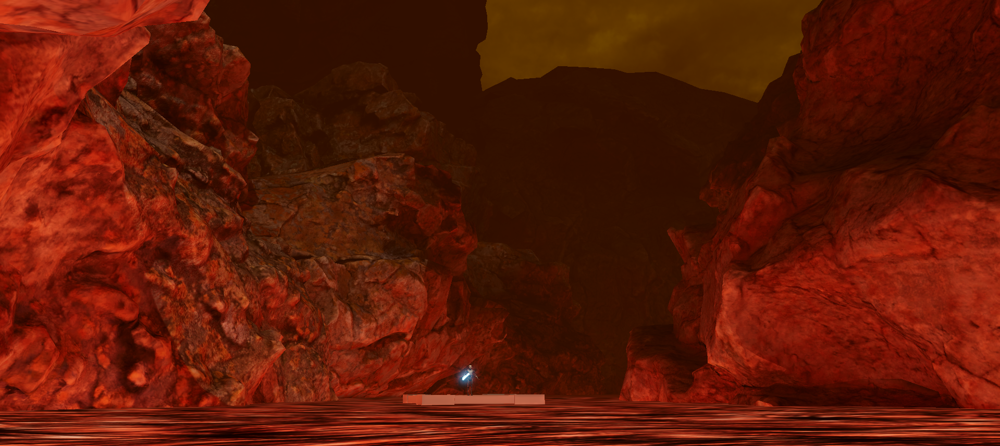

VR+mocap prototype
Combining VR and full-body motion capture for highly physical virtual experiences.
This is a work-in-progress VR multiplayer sword dueling game. Two players face off with physical foam swords on a motion capture stage. The capture data is streamed to the VR headsets to drive visuals that align with the real world.
I am using an OptiTrack system streaming data to a modified version of the official OptiTrack Unity plugin for 1:1 skeletal tracking. In this example a friend and I swing tracked foam swords at each other which drives the lightsabers. Skeletal tracking is not visible in this test.

I used several CC0 assets from PolyHaven.com and AmbientCG.com to create a generic lava planet.
